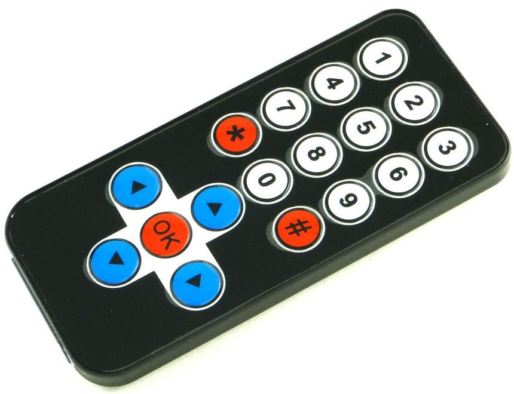
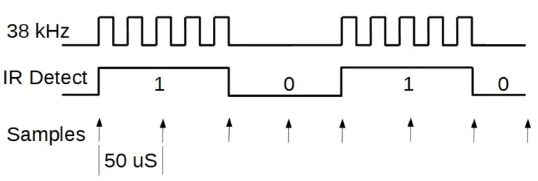
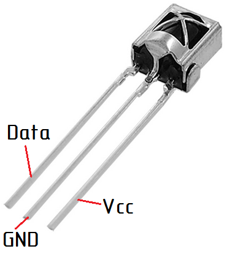

Использование инфракрасного пульта в проектах с Arduino
Инфракрасный пульт дистанционного управления (ИК-пульт) — один из самых простых способов взаимодействия с электронными приборами.

При нажатии кнопки ИК-пульта происходит кодирование сигнала в инфракрасном свете, приемник принимает его и выполняет требуемое действие. Информация кодируется в виде логической последовательности пакетов импульсов с определенной частотой. Приемник получает эту последовательность и выполняет демодулирование данных. Для приема сигнала используется микросхема, в которой содержатся фотоприемник (фотодиод), усилители, полосовой фильтр, демодулятор (детектор, который позволяет выделить огибающую сигнала) и выходной транзистор. Также в ней установлены фильтры – электрический и оптический. Работают такие устройства на расстоянии до 40 метров.

Для приема сигнала с ИК-пульта требуется специальный ИК-датчик. ИК-датчик воспринимает инфракрасный сигнал только на частоте 38 кГц (иногда 40кГц). Именно такое свойство позволяет датчику игнорировать много посторонних световых шумов от ламп освещения и солнца.
Популярным для простых проектов является ИК-датчик VS1838B (рис. 3).

Основные характеристики ИК-датчика VS1838B:
- несущая частота — 38 кГц;
- напряжение питания — 2,7 ... 5,5 В;
- потребляемый ток — 50 мкА.
Можно использовать и другие датчики, например: TSOP4838, TSOP1736, SFH506.
Подключение ИК-датчика VS1838B к Arduino показано в таблице 1.
Таблица 1
| Arduino | VS1838B |
|---|---|
| 5V | Vcc |
| GND | GND |
| D2 | Data |
Для составления скетча с ИК-пультом воспользуемся стандартной библиотекой IRremote, которая предназначена для упрощения работы с приёмом и передачей ИК-сигналов. Для начала составим скетч для того, чтобы понять какой код дает каждая кнопка (скетч №1).
Скетч №1
#include "IRremote.h"
IRrecv irrecv(2); // указываем вывод, к которому подключен приемник
decode_results results;
void setup() {
Serial.begin(9600); // выставляем скорость COM порта
irrecv.enableIRIn(); // запускаем прием
}
void loop() {
if (irrecv.decode(&results)) { // если данные пришли
Serial.println(results.value, HEX); // печатаем данные
irrecv.resume(); // принимаем следующую команду
}
}
После загрузки скетча в Arduino можно получить команды с пульта. Открываем монитор последовательного порта (Ctrl+Shift+M), берём в руки пульт, и направляем его на датчик. Нажимая разные кнопочки, наблюдаем в окне монитора соответствующие этим кнопкам коды.
В некоторых случаях, при попытке загрузить программу в контроллер, может появиться ошибка:
TDK2 was not declared In his scope
Чтобы ее исправить, достаточно удалить два файла из папки библиотеки. Открываем папку, где установлено приложение Arduino IDE (скорее всего «C:\Program Files (x86)\Arduino»). Затем в папку с библиотекой:
…\Arduino\libraries\RobotIRremote и удаляем файлы IRremoteTools.cpp и IRremoteTools.h. Затем, перезапускаем Arduino IDE, и снова пробуем загрузить программу на контроллер.
Управление светодиодом с помощью ИК-пульта
Составим скетч для зажигания и гашения светодиода при нажатии на кнопки громкости. В качестве светодиода, используем встроенный светодиод на выводе 13. Для этого нам потребуется коды (могут отличаться, в зависимости от пульта):
- FFA857 — увеличение громкости;
- FFE01F — уменьшение громкости.
Скетч №2
#include "IRremote.h"
IRrecv irrecv(2); // указываем вывод, к которому подключен приемник
decode_results results;
void setup()
{
irrecv.enableIRIn(); // запускаем прием
}
void loop()
{
if (irrecv.decode( &results )) { // если данные пришли
switch ( results.value ) {
case 0xFFA857:
digitalWrite( 13, HIGH );
break;
case 0xFFE01F:
digitalWrite( 13, LOW );
break;
}
irrecv.resume(); // принимаем следующую команду
}
}
Загружаем на Arduino и тестируем. Нажимаем vol+ — светодиод зажигается, vol- — гаснет.